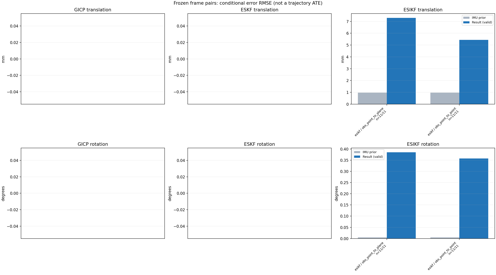

20261015_112940_pitch_up · depth=disparity_cache · cache=f1e916b5dc2c9d145a67
模型视差：/home/ubuntu22/slam/SIO_SLAM/models/tensorrt/disp_896x448_fp16.plan；engine SHA256=604cf6ac1f705c877260711730dd5d2d58c2a21f3020c03c668401ef7fb1e768。输入为生产裁剪与光照处理后的 RGB 0..255；此实验使用原始浮点像素视差，不应用完整前端的邻域视差后处理。
原始 ONNX SHA256：e9f49736a65d68d06681add463866b6defdf78fdd7f4f50f6cc941b682fdc0bc。
代价体图改写验证：ONNX Runtime 固定随机特征输入，最大绝对误差 0；该项检查图改写，完整模型精度仍需由录制数据评估。
配准代码版本：744ac2d993ae629b0cc44a3b1d995e04ab4fad48；观测生成版本：744ac2d993ae629b0cc44a3b1d995e04ab4fad48。
固定图像对与纯 IMU 先验；ESKF 回放固定 GICP 观测，ESIKF 直接读取点云。真值只用于此报告。
同时查看 converged 与 solver_status：上游默认 Stereo 在 max_iter / stopped_at_minimum 时也可能置 converged=true。valid 表示输入检查通过，不表示精度提升。欧氏 GICP 未提供独立的点距 RMSE，该列显示 NaN。
误差按每对图像的锚点计算，单位 m / degrees。此处 RMSE 不是全序列 ATE；末帧受同一锚点条件约束。NIS 与条件马氏距离是诊断量，少量相关图像对不能用于宣称协方差已校准。
全部指标 CSV · R / P 矩阵 CSV · Stereo 求解逐轮 CSV · ESIKF 逐轮轨迹 CSV · 末轮 H / R / K_pose 矩阵 CSV · 配置快照 · 矢量图
unflagged 排除纯惯性先验平移误差超过 50 mm 的图像对；whitened 为误差按协方差白化后的每自由度均值，协方差与实际误差相符时约为 1。prior_whitened 用真值误差只检验先验 P；NIS 为 ESIKF 首轮 rᵀ(P+R)⁻¹r，不用真值，检验的是 P+R 的总量，单靠它分不开 P 与 R，偏差、错误对应和线性化误差也会抬高它。观测方差超过先验方差 1e+04 倍的方向视为不可观，从 NIS 及其自由度中去掉（nis_dof）。一致时 nis_per_dof 均值约 1、nis_over_chi2_median 中位数约 1；帧对少且共享序列，超出 95% 分位的比例只作参考。
| stage | method | variant | valid | total | result_translation_rmse_m | result_rotation_rmse_deg | result_translation_median_m | result_rotation_median_deg | result_translation_rmse_unflagged_m | result_rotation_rmse_unflagged_deg | improved_translation | improved_rotation | posterior_whitened_by_P_rot_mean | posterior_whitened_by_P_trans_mean | prior_whitened_by_P_rot_mean | prior_whitened_by_P_trans_mean | nis_per_dof_mean | nis_over_chi2_median_median | nis_exceeds_chi2_95_fraction |
|---|---|---|---|---|---|---|---|---|---|---|---|---|---|---|---|---|---|---|---|
| esikf | esikf | obs_point_to_plane | 11 | 11 | 0.0072955 | 0.38516 | 0.0071941 | 0.29843 | 0.0072955 | 0.38516 | 0 | 0 | 23.491 | 12.782 | 3.0157e-07 | 3.1657e-06 | 0.0099235 | 0.0028901 | 0 |
| esikf | esikf | obs_point_to_point | 11 | 11 | 0.0054326 | 0.35749 | 0.0042718 | 0.30442 | 0.0054326 | 0.35749 | 0 | 0 | 79.165 | 25.68 | 3.0157e-07 | 3.1657e-06 | 0.0010639 | 0.00024327 | 0 |

| stage | case | method | variant | status | solver_status | inliers | converged | covariance_convention | covariance_from_hessian | fitness | registration_rmse_m | prior_trans_error_m | result_trans_error_m | prior_rot_error_deg | result_rot_error_deg | prior_flagged | R_rot_trace_rad2 | R_pos_trace_m2 | nis_regularized | posterior_whitened_by_P_rot | posterior_whitened_by_P_trans | prior_whitened_by_P_rot | prior_whitened_by_P_trans | nis_per_dof | nis_dof |
|---|---|---|---|---|---|---|---|---|---|---|---|---|---|---|---|---|---|---|---|---|---|---|---|---|---|
| esikf | static_a096 | esikf | obs_point_to_point | updated | converged | 4983 | 1 | 1 | 0 | 0 | 4.2352e-05 | 0.0058674 | 0.0024661 | 0.13787 | 0 | 5.3765e-07 | 1.117e-06 | nan | 21.819 | 25.962 | 6.1749e-08 | 5.7842e-08 | 2.5191e-05 | 6 | |
| esikf | static_a096 | esikf | obs_point_to_plane | updated | converged | 4963 | 1 | 1 | 0 | 0 | 4.2352e-05 | 0.0043292 | 0.0024661 | 0.10567 | 0 | 1.9603e-06 | 3.6174e-06 | nan | 1.7681 | 5.8379 | 6.1749e-08 | 5.7842e-08 | 0.00020872 | 6 | |
| esikf | static_a100 | esikf | obs_point_to_point | updated_not_converged | max_iterations | 5524 | 0 | 1 | 0 | 0 | 5.825e-05 | 0.0056136 | 0.0031067 | 0.33853 | 0 | 4.2262e-07 | 9.9823e-07 | nan | 58.043 | 38.332 | 9.7992e-08 | 1.0705e-07 | 0.00011366 | 6 | |
| esikf | static_a100 | esikf | obs_point_to_plane | updated | converged | 5063 | 1 | 1 | 0 | 0 | 5.825e-05 | 0.0040499 | 0.0031067 | 0.24971 | 0 | 1.5958e-06 | 3.6206e-06 | nan | 14.371 | 3.3828 | 9.7992e-08 | 1.0705e-07 | 0.00026818 | 6 | |
| esikf | static_a104 | esikf | obs_point_to_point | updated | converged | 5663 | 1 | 1 | 0 | 0 | 8.1652e-05 | 0.0062199 | 0.0047918 | 0.30442 | 0 | 4.0733e-07 | 9.8094e-07 | nan | 63.85 | 42.099 | 2.331e-07 | 1.7942e-07 | 8.1326e-05 | 6 | |
| esikf | static_a104 | esikf | obs_point_to_plane | updated | converged | 5294 | 1 | 1 | 0 | 0 | 8.1652e-05 | 0.0033838 | 0.0047918 | 0.1973 | 0 | 1.6385e-06 | 3.4893e-06 | nan | 12.779 | 2.2777 | 2.331e-07 | 1.7942e-07 | 0.00021798 | 6 | |
| esikf | static_a108 | esikf | obs_point_to_point | updated | converged | 5292 | 1 | 1 | 0 | 0 | 0.00012134 | 0.0011653 | 0.0065651 | 0.041578 | 0 | 4.6878e-07 | 1.0993e-06 | nan | 0.92577 | 1.0592 | 4.3749e-07 | 4.4622e-07 | 1.9313e-05 | 6 | |
| esikf | static_a108 | esikf | obs_point_to_plane | updated | converged | 5399 | 1 | 1 | 0 | 0 | 0.00012134 | 0.0071941 | 0.0065651 | 0.29843 | 0 | 1.6587e-06 | 3.4152e-06 | nan | 11.422 | 12.002 | 4.3749e-07 | 4.4622e-07 | 0.00048064 | 6 | |
| esikf | static_a112 | esikf | obs_point_to_point | updated_not_converged | max_iterations | 5773 | 0 | 1 | 0 | 0 | 0.00014022 | 0.0030844 | 0.0060962 | 0.42564 | 0 | 4.1646e-07 | 9.853e-07 | nan | 134.98 | 9.9179 | 3.7716e-07 | 5.2747e-07 | 8.5959e-05 | 6 | |
| esikf | static_a112 | esikf | obs_point_to_plane | updated | converged | 5343 | 1 | 1 | 0 | 0 | 0.00014022 | 0.010061 | 0.0060962 | 0.45454 | 0 | 1.6938e-06 | 3.2944e-06 | nan | 34.634 | 24.321 | 3.7716e-07 | 5.2747e-07 | 0.0025761 | 6 | |
| esikf | static_a116 | esikf | obs_point_to_point | updated_not_converged | max_iterations | 5818 | 0 | 1 | 0 | 0 | 0.00015425 | 0.0083562 | 0.0051106 | 0.74208 | 0 | 4.2551e-07 | 9.8143e-07 | nan | 332.25 | 54.325 | 2.6501e-07 | 5.1679e-07 | 0.00081725 | 6 | |
| esikf | static_a116 | esikf | obs_point_to_plane | updated | converged | 5293 | 1 | 1 | 0 | 0 | 0.00015425 | 0.0076441 | 0.0051106 | 0.50865 | 0 | 1.7804e-06 | 3.522e-06 | nan | 29.486 | 13.646 | 2.6501e-07 | 5.1679e-07 | 0.0049536 | 6 | |
| esikf | static_a120 | esikf | obs_point_to_point | updated | converged | 5367 | 1 | 1 | 0 | 0 | 0.00015455 | 0.0021539 | 0.003844 | 0.06507 | 0 | 4.1637e-07 | 1.049e-06 | nan | 1.8794 | 4.704 | 1.4989e-07 | 3.7393e-07 | 0.00021684 | 6 | |
| esikf | static_a120 | esikf | obs_point_to_plane | updated | converged | 5660 | 1 | 1 | 0 | 0 | 0.00015455 | 0.0011599 | 0.003844 | 0.1841 | 0 | 1.4759e-06 | 3.4411e-06 | nan | 8.1351 | 1.2421 | 1.4989e-07 | 3.7393e-07 | 0.00037276 | 6 | |
| esikf | static_a124 | esikf | obs_point_to_point | updated_not_converged | max_iterations | 5731 | 0 | 1 | 0 | 0 | 0.00020141 | 0.0097414 | 0.001178 | 0.47898 | 0 | 4.2726e-07 | 1.017e-06 | nan | 111.68 | 68.364 | 1.4071e-08 | 4.2801e-07 | 0.0017129 | 6 | |
| esikf | static_a124 | esikf | obs_point_to_plane | updated | converged | 5548 | 1 | 1 | 0 | 0 | 0.00020141 | 0.012296 | 0.001178 | 0.71117 | 0 | 1.6738e-06 | 3.5537e-06 | nan | 62.653 | 36.289 | 1.4071e-08 | 4.2801e-07 | 0.02556 | 6 | |
| esikf | static_g128 | esikf | obs_point_to_point | updated_not_converged | max_iterations | 5770 | 0 | 1 | 0 | 0 | 0.0013486 | 0.002945 | 0.011619 | 0.37304 | 0 | 4.0528e-07 | 9.9793e-07 | nan | 102.8 | 14.095 | 1.368e-06 | 1.2803e-05 | 0.0015656 | 6 | |
| esikf | static_g128 | esikf | obs_point_to_plane | updated_not_converged | max_iterations | 5589 | 0 | 1 | 0 | 0 | 0.0013486 | 0.0079936 | 0.011619 | 0.44191 | 0 | 1.6386e-06 | 3.4054e-06 | nan | 44.566 | 18.024 | 1.368e-06 | 1.2803e-05 | 0.029642 | 6 | |
| esikf | static_g136 | esikf | obs_point_to_point | updated | converged | 5433 | 1 | 1 | 0 | 0 | 0.0017111 | 0.0035866 | 0.0047298 | 0.24569 | 0 | 4.2436e-07 | 1.0443e-06 | nan | 36.198 | 9.0091 | 2.265e-07 | 1.07e-05 | 0.005909 | 6 | |
| esikf | static_g136 | esikf | obs_point_to_plane | updated | converged | 5599 | 1 | 1 | 0 | 0 | 0.0017111 | 0.0081624 | 0.0047298 | 0.4294 | 0 | 1.6508e-06 | 3.5038e-06 | nan | 31.926 | 13.49 | 2.265e-07 | 1.07e-05 | 0.027188 | 6 | |
| esikf | static_g144 | esikf | obs_point_to_point | updated | converged | 5305 | 1 | 1 | 0 | 0 | 0.0023688 | 0.0042718 | 0.0029205 | 0.11299 | 0 | 4.4803e-07 | 1.0883e-06 | nan | 6.3914 | 14.616 | 8.6273e-08 | 8.6837e-06 | 0.0011558 | 6 | |
| esikf | static_g144 | esikf | obs_point_to_plane | updated | converged | 5372 | 1 | 1 | 0 | 0 | 0.0023688 | 0.0066637 | 0.0029205 | 0.2137 | 0 | 1.5916e-06 | 3.4617e-06 | nan | 6.6623 | 10.084 | 8.6273e-08 | 8.6837e-06 | 0.017692 | 6 |